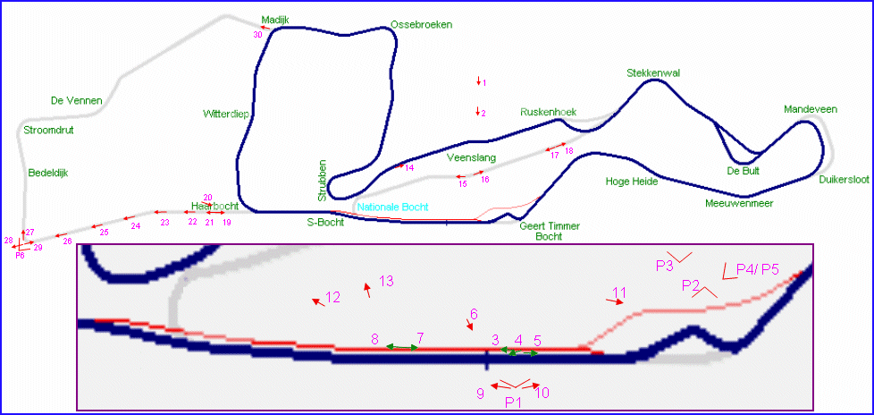
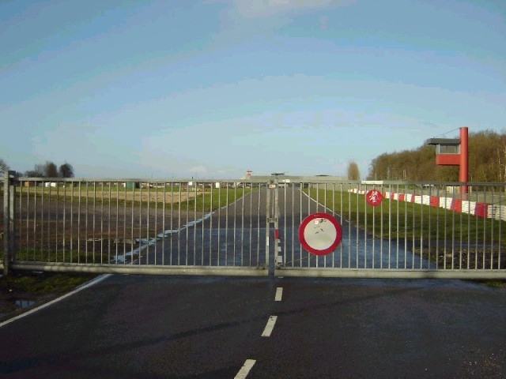
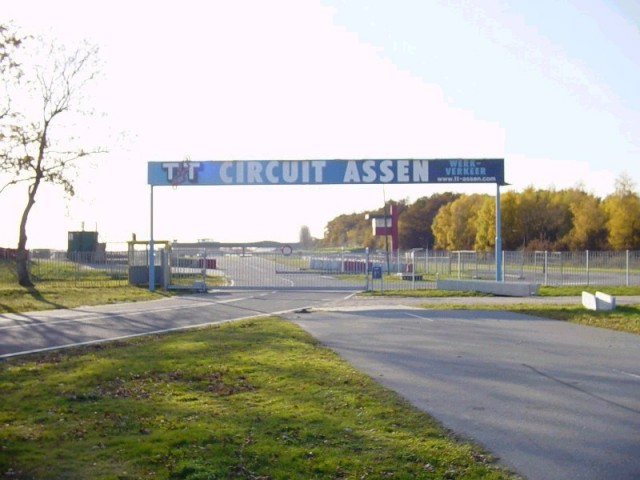
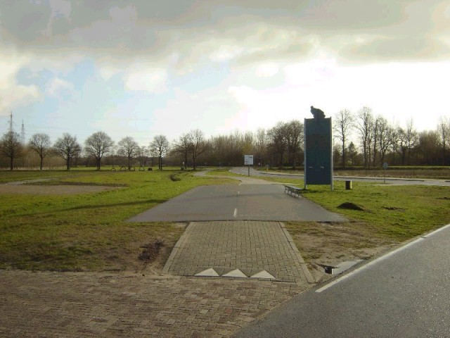
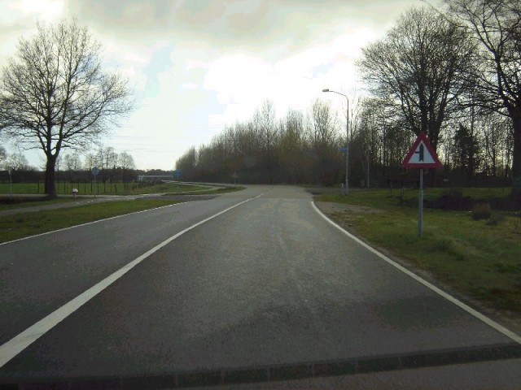
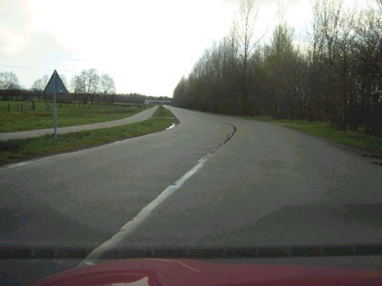
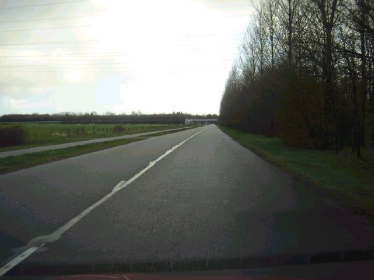
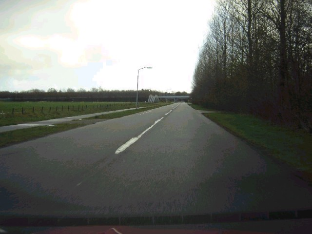

Assen - Pre-1984 Section (Part A) [Page 4 of 5]
Contents || Entrance & Pitlane | Grandstand Views | Paddock Views | Pre-1984 (Part A) | Pre-1984 (Part B) || Home

Numbers on the map represent the location where the photographs were taken. Click
hyperlinks above to view the photographs.

19 - Looking towards the Haarbocht and the
S-bocht.

20 - Standing just outside the circuit, but
in the early 80's this was part of the circuit.

21 - Until 1983 this was part of the
circuit.

22

23

24 - Nowadays this is the main road to the
circuit.

25
Return to racingcircuits.net's Photo Archive Main Index
©2003, 2004 & 2005 Roelard Smit. Reproduced here with kind permission.